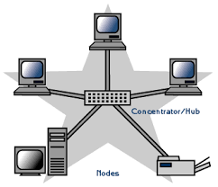
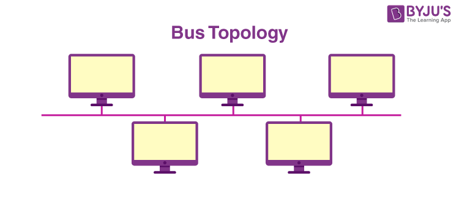

Goals:
- Delve into more complex networking topics.
- Understand the workings of advanced network systems.
Motives:
To provide a deeper understanding of networking for interested students.
Detailed Information:
Network Topologies: In network architecture, a topology refers to the layout of connected devices. Common topologies include:
- Star: All nodes are connected to a central hub.
- Bus: All nodes are connected to a single backbone cable.
- Ring: Each node is connected to two other nodes, forming a ring.
- Mesh: Every node is connected to every other node.


Protocols and Standards: These are rules and guidelines that define how data is transmitted over networks. Common protocols and standards include:
- TCP/IP: Transmission Control Protocol/Internet Protocol, the foundational protocols of the Internet.
- HTTP/HTTPS: HyperText Transfer Protocol/Secure, used for transmitting web pages and data over the Internet.
- FTP: File Transfer Protocol, for transferring files between computers on a network.

Wireless Networking: This involves the use of wireless technologies to connect devices to a network. Key aspects include:
- Wi-Fi Standards: Different standards like 802.11n, 802.11ac, and 802.11ax define wireless networking capabilities.
- Setup: Configuring wireless routers and access points to create wireless networks.
- Security: Implementing encryption and authentication mechanisms to secure wireless networks.
Activity:
Network Simulation: Use network simulation software to design and analyze different network topologies. Students can experiment with various configurations and observe how they affect network performance.
Quiz:
Name one type of network topology.
What does HTTP stand for?
What is the main advantage of wireless networking?